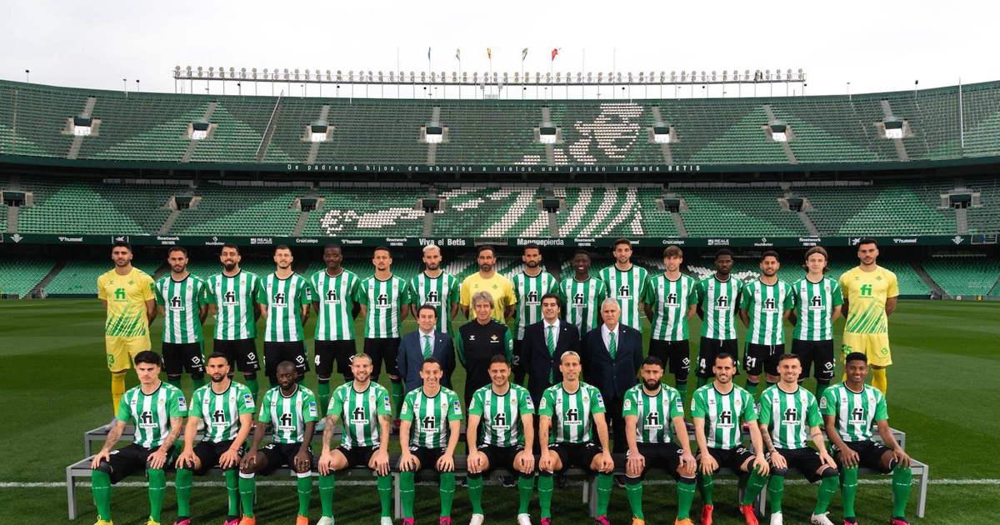
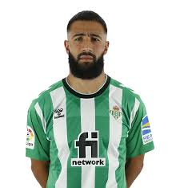

Bienvenidos a la seccion de información sobre el Real Betis Balompié
Esta página no es la web oficial del Real Betis si quiere acceder a ella acceda al enlace de arriba
Acceda para entrar en un sorteo de una entrada para cualquier partido del Real Betis
Esto es el Real Betis
FOTO OFICIAL PLANTILLA REAL BETIS BALOMPIÉ
Historico de participaciones en La Liga
| Temporada | Liga | Division | Posicion |
| 22/23 | LaLiga | Primera Division | 5º |
| 21/22 | LaLiga | Primera Division | 5º |
| 20/21 | LaLiga | Primera Division | 6º |
| 19/20 | LaLiga | Primera Division | 15º |
| 18/19 | LaLiga | Primera Division | 10º |
| 17/18 | LaLiga | Primera Division | 6º |
| 16/17 | LaLiga | Primera Division | 15º |
| 15/16 | LigaBBVA | Primera Division | 10º |
| 14/15 | LigaAdelante | Segunda Division | 1º |
| 13/14 | LigaBBVA | Primera Division | 20 |
| 12/13 | LigaBBVA | Primera Division | 7º |
| 11/12 | LigaBBVA | Primera Division | 12º |
| 10/11 | LigaAdelante | Segunda Division | 1º |
| 09/10 | LigaAdelante | Segunda Division | 3º |
| 08/09 | LigaBBVA | Primera Division | 18º |
| 07/08 | LaLiga | Primera Division | 14º |
| 06/07 | LaLiga | Primera Division | 16º |
| 05/06 | LaLiga | Primera Division | 14º |
| 04/05 | LaLiga | Primera Division | 4º |
| 03/04 | LaLiga | Primera Division | 9 |
| 02/03 | LaLiga | Primera Division | 8 |
| 01/02 | LaLiga | Primera Division | 6 |
| 00/01 | Segunda Division | Segunda Division | 2 |
LA HISTORIA
En 1907, un grupo de estudiantes de la Escuela Politécnica, situada en la calle Cervantes, que cursaban estudios preparatorios para la carrera militar y para medicina funda el Sevilla Balompié. Entre ellos había muchos grupos de hermanos: los Hermosa, Wesolowski, Castillo, Cascales y Gutiérrez. Vestían de blanco y azul. Su primer presidente fue Alfonso del Castillo Ochoa y el primer capitán que hacía las veces de entrenador-, en 1914, Manuel Ramos Asencio. La sede social se ubicó en la calle Alfonso XII (1907-1909), Federico de Castro (1910-1911) y Jerónimo Hernández (1912-1914).
El nombre elegido por el grupo de jóvenes, con el que pretendieron evitar la expresión inglesa foot-ball, ha acabado por convertirse en su seña de identidad: "Sevilla BALOMPIÉ" (los primeros meses, "España Balompié", también con camisa azul y pantalón blanco). El club se inscribió en el Gobierno Civil el 1 de febrero de 1909.
Muy pronto, el "Balompié" se dio a conocer al convertirse en 1910 en el primer vencedor de la Copa de Sevilla, condición que revalidó y ostentó en 1911, 1912 y 1915. Participó también en la primera edición de la Copa de Andalucía a principios de 1910 y fue invitado a participar en la Copa de España, aunque no acudió por motivos económicos.
En 1909 nació el Betis Foot-ball Club, según relatos orales como consecuencia de una escisión en el Sevilla Foot-ball Club: Eladio García de la Borbolla, hasta entonces miembro de la junta directiva del Sevilla Foot-ball Club, decidió abandonarlo y fundar su propio equipo. De esta forma apareció el Betis Foot-ball Club, cuya sede social estuvo en la calle Mariscal (1909-1911) y en Federico de Castro (1912-1914).
En 1914 el Balompié volvió a proclamarse Campeón de Sevilla e iniciará los trámites para la fusión con el Betis Foot-ball Club que, disuelto en 1913, había sido reorganizado al año siguiente bajo la colaboración de José Gutiérrez, Eladio García de la Borbolla y Miguel Folgado entre otros; concediéndose el título de "Real" por parte de Alfonso XIII, gracias a la intervención decisiva del Marqués de Mochales.
El 6 de diciembre de 1914, la Junta Directiva del Sevilla Balompié y dos días más tarde el Betis Foot-ball Club, aprobaron la fusión de ambos clubes, gracias a la participación importantísima de Herbert Richard "Papá" Jones. En agosto de 1915, el Gobernador Civil de Sevilla, Severo Núñez, aprobó los Estatutos y el cambio de denominación del club absorbente, disponiendo que se modificara la denominación del "Sevilla" Balompié por la de "Real Betis" Balompié (apunte nº 283 página 36 del Libro de Gobierno del Registro Civil). El Balompié aportó los jugadores, el palmarés, la afición y el terreno de juego, que desde 1913 era el Campo de las Tablas Verdes, en diversas ubicaciones en el Prado de San Sebastián, mientras el Betis F.C. aportó principalmente el título de Real, hasta tal punto que el club continuó siendo conocido popularmente como "el Balompié" y sus aficionados como "los balompedistas" hasta los años treinta, a partir de cuando la denominación "Betis" y el gentilicio "bético" se abrió paso en la terminología popular para referirse al Real Betis Balompié y sus seguidores.
Tras volver a proclamarse Campeón de Sevilla en 1915, el Balompié inició una década de lento declive en la que rozó la desaparición, al no disponer de medios económicos ni derecho de retención de jugadores en la época del "amateurismo marrón", o profesionalismo encubierto. Además, la mayoría de los jugadores fundadores envejecían. Más de una decena de sus mejores jugadores fueron "captados" en poco tiempo, a pesar de lo cual estuvo a punto en 3 ocasiones de ganar el Campeonato de Andalucía como única alternativa al Sevilla F.C., nutrido de jugadores que habían abandonado el Balompié. En 1918 los béticos estrenan el terreno de juego del Patronato. Los colores azul pavo real y blanco continuaron en los béticos hasta 1920 alternándose con los verdiblancos, según las fuentes de que se dispone.
EL "MANQUEPIERDA"
Difícilmente puede entenderse lo que es el Betis sin mencionar los 7 años que jugó en Tercera, porque entonces tanto el club como su afición encontraron una seña de identidad que le acompaña aún en la actualidad. Según muchos autores, su "alma", que se halla en una expresión que en los años 50 despertó la simpatía de toda España: "¡Viva er Beti manque pierda!". El poeta Joaquín Romero Murube describió aquellos tiempos y aquella expresión con las siguientes palabras: "El Betis llegó a formar una inderrocable moral a prueba de derrotas. Pero en vez de adoptar esa inexplicable renunciación que hemos aplicado, para nuestra desgracia, a tantas adversidades -la de subirnos los hombros en vez de subirnos de corazón-, el Betis, tras la hecatombe, arremetía todas las tardes con más entusiasmo hacia la conquista de su gloria".
Fueron los años de los bocadillos de tortilla, de las rifas, de la inundación completa del Estadio como consecuencia del desborde del Tamarguillo. Son años de Pascual Aparicio, Juan Petralanda, Manuel Ruiz Rodríguez, Alfonso Jaramillo, José María de la Concha, Manuel Simó y tantos otros.
Y el Betis superó esos años con la ayuda de una afición que consigue llevar al club de regreso a Segunda División en 1954, ganando fama por llenar su estadio y por las "marchas verdes" en los desplazamientos. Atrás quedaron años de tremendas dificultades económicas, en los que principalmente unos pocos mantuvieron vivo al club. La experiencia en Tercera fortaleció extraordinariamente al club en términos sociológicos y le confirió un carácter que lo hace único.
Pocos dudaron tras la celebrada vuelta del Betis a Segunda en 1954 que ascendería a Primera tarde o temprano. No obstante, hubo que esperar hasta cuatro años más tarde, hasta e1 de junio de 1958, para ver al Real Betis Balompié como equipo de Primera División.
ACTUALIDAD DEL BETIS
Tras ser levantadas parcialmente las medidas cautelares en el verano de 2015, los accionistas de referencia, Ángel Haro García y José Miguel López Catalán, ganan la Junta General Extraordinaria de Accionistas del 23 de septiembre de ese año con el apoyo masivo de los béticos. Desde febrero de 2016, Ángel Haro es el presidente del Real Betis, con un proyecto nacido para lograr el crecimiento deportivo, la profesionalización y el avance del Real Betis Balompié en todas las áreas sociales, económicas y futbolísticas. En definitiva, la adaptación de un club histórico al fútbol del siglo XXI, con la única pretensión de colocar al Real Betis Balompié en sus diferentes facetas a la altura de su inigualable afición.
En base a este impulso, el Real Betis va consolidando un notable crecimiento en todos los sectores. Fruto de ello es el éxito deportivo obtenido en la temporada 2017-18, en la que retorna de nuevo a las competiciones continentales después de completar un curso extraordinario en el que sumó 60 puntos y alcanzó el sexto puesto de la clasificación. Un lugar privilegiado al que se hizo merecedor por su juego fluido, su apuesta por el balón, su propuesta dominadora y su valentía en cada encuentro. Un brillante ejercicio que, además, permitió vivir algunos momentos que ya forman parte de la historia. Recuerdos tan agradables como el triunfo en el campo del Real Madrid, campeón de Europa, y la goleada deslumbrante por 3-5 en el feudo del eterno rival.
Este logro era, sin duda, la primera confirmación de los objetivos propuestos por los máximos dirigentes de la entidad, Ángel Haro y José Miguel López Catalán, desde el momento mismo de su llegada a la entidad. Un ambicioso proyecto que incluía la unidad del beticismo, la regeneración de la entidad, la normalización institucional, la devolución del protagonismo a los socios y accionistas, el crecimiento económico del club, la mejora y ampliación de las instalaciones del estadio Benito Villamarín y la apuesta por un proyecto deportivo que hiciera regresar los triunfos y llevara de nuevo al equipo a las competiciones europeas.
Antes de dar comienzo la temporada 2017-18 fue inaugurado oficialmente el nuevo Gol Sur de Heliópolis. El punto y final a una magna obra que duró un año y que permitió reemplazar la vieja gradona de 1972. Una transformación radical que se vio complementada con importantes mejoras estéticas y técnicas que le otorgaron una imagen más moderna y vanguardista al coliseo bético. El color verde y las formas triangulares del escudo se adueñaron del interior del estadio, que también presentaba una nueva iluminación con soluciones mucho más sostenibles. La afición, satisfecha, celebró extasiada esa nueva colosal tribuna que convertía al estadio Benito Villamarín, con capacidad para 60.721 espectadores, en el cuarto campo con mayor aforo de la Liga en España tras el Camp Nou, el Santiago Bernabéu y el Wanda Metropolitano.
Un gran acontecimiento al que siguió otro momento estelar en la historia del club. El vivido el 23 de noviembre de 2017, fecha en que se celebró una Junta General Ordinaria de Accionistas que entraría en la historia de la entidad. Una cita fundamental, ya que en ella los accionistas del Real Betis aprobaron por mayoría abrumadora el acuerdo suscrito por el club con Manuel Ruiz de Lopera y Bitton Sport, que permitió la compra de las acciones de estos y sirvió para cerrar el largo litigio judicial que tanto lastraba el desarrollo de la institución.
De este acuerdo ratificado por el accionariado bético nacería el proceso de venta de acciones con el que la entidad consiguió democratizarse al máximo con una gran atomización de los títulos. El Betis de los béticos.
Aquí encontrará información que le puede ser relevante acerca del Real Betis
Los máximos goleadores del Real Betis son
- Borja Iglesias 11 goles
- Sergio Canales 4 goles
- Juanmi 4 goles
- Fekir 2 goles
Estos futbolistas forman la plantilla del betis para la temporada 22/23
| Plantilla del Real Betis | |
| 1.Claudio Bravo | |
| 2.Rui Silva | |
| 3.Dani Martin | .png)
|
| 4.Martin Montoya | |
| 5.Edgar González | |
| 6.Victor Ruiz | |
| 7.German Pezzella | |
| 8.Luiz Felipe | |
| 9.Abner Vinicius | |
| 10.Yousuff Sabaly | |
| 11.Fran Delgado | |
| 12.Juan Miranda | |
| 13.Paul Akoukou | |
| 14.Guido Rodríguez | |
| 15.Sergio Canales | |
| 16.Luiz Henrique | |
| 17.William Carvalho | |
| 18.Joaquín | |
| 19.Ayoze Pérez | |
| 20.Aitor Ruibal | |
| 21.Juan Cruz Díaz Esposito | |
| 22.Rodri Sánchez | |
| 23.Juanmi | |
| 24.Borja Iglesias | |
| 25.Nabil Fekir |  |
| 26.William José |
Actualmente el Real Betis se encuentra en 5 posición
Hoy día jueves 16/03/2023 se disputará el encuentro de vuelta de octavos de final de la UEL entre Real Betis vs Manchester United a las 18:45